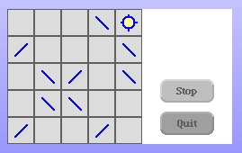
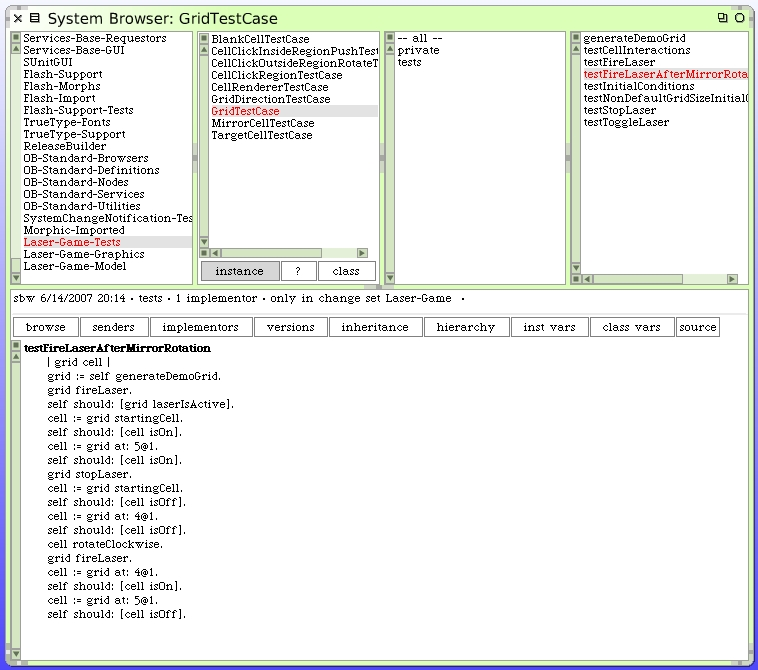
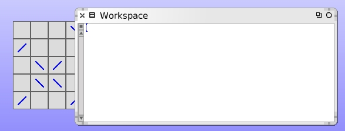
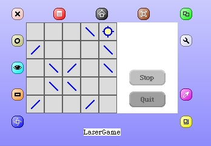
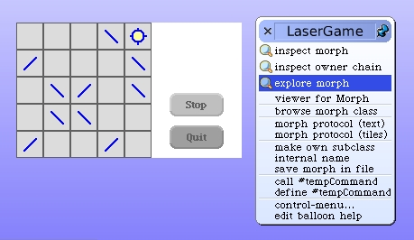
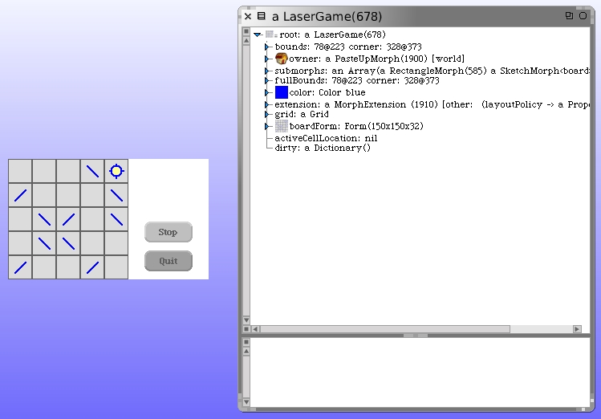
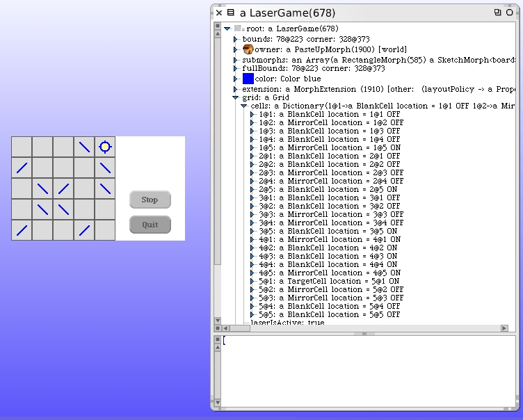

Bug With Target Cell
Our next bug to fix is where the target cell on our LaserGame morph remains "lit", if the laser is active and we rotate a mirror cell in such a way that the path of the laser beam can no longer reach the target cell. Here's the situation. I fired the laser, the target became lit and then rotated the mirror cell adjacent to the target cell, in the same row. The target remains lit.
This is obviously a bug. There's also the issue of how we expect the user interface to handle cell push and rotation activity while the laser is active. We never really stated any specific guidelines about this behavior when initially describing the game. That is, there's no prior requirement that says a user should or should not be able to adjust cells while the laser is active.
My own preference would be to inhibit the modification of cells on the grid while the laser is active. That makes it too easy to solve. And maybe we'll do that. Maybe we'll add a provision to inhibit cell rotation or pushing in this situation. But first we'll fix the bug that shows the target cell still being active when it clearly shouldn't be.
The first question to ask ourselves is whether this is a bug in the model code or something unusual about the graphics code. We may have already tested this specific behavior in a model unit test. Here's our existing test case method.
According to this unit test the target cell should not be active right now. Let's check some things out. A simple check to see if it's a problem with the morph redrawing itself would be to temporarily cover it up. I created a Workspace window and placed it so the part of the board where we find the target cell is occluded.
When we close the Workspace window the LaserGame morph will repaint.
Nope. Problem still there. Let's inspect the morph itself. Command-Click on the LaserGame morph. The halos around it will appear.
Click on the gray wrench halo and you will be presented with a Debug menu.
Choose "explore morph" to open up an object explorer on our morph. Drag the object explorer window over to the side if it's covering our LaserGame morph. I resized the window to make it wider too. If you click once on the arrow to the left of "root", the first layer of internals are revealed.
Click on the arrow next to "grid" and then inside the grid on the arrow next to "cells". You can see the objects that are in the grid cells dictionary.
Look at that. The target cell at location 5@1 is on! That shouldn't be.